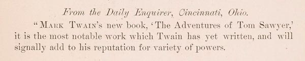

Detail from
SALES PROSPECTUS

Reviews of
The Adventures of Tom Sawyer
British Edition
The Atlantic Monthly
[W. D. Howells]
London
Examiner
[Moncure Conway]
Illustrated London News
Athenaeum
London
Times
British Quarterly Review
Hartford Daily Times
New Haven
Morning Journal and Courier
Hartford Daily Courant
[C. D. Warner]
New York Times
San Francisco
Daily Alta California
San Francisco
Daily Evening Bulletin
Hartford
Christian Secretary
QUOTATIONS USED IN THE REVIEWS